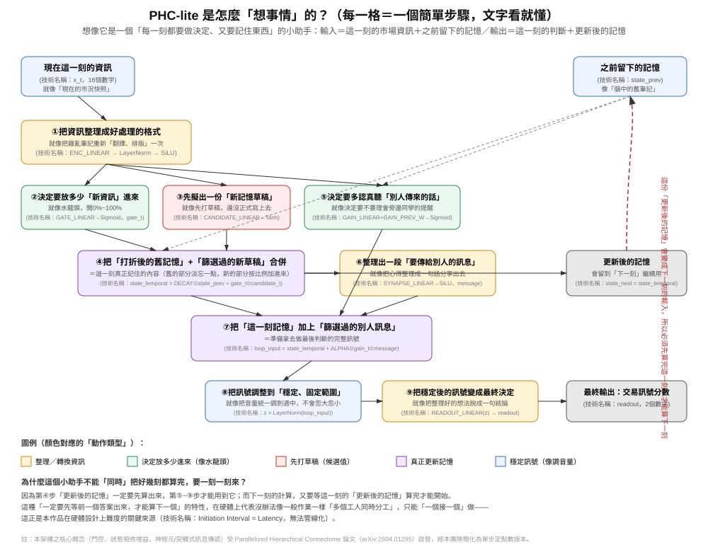
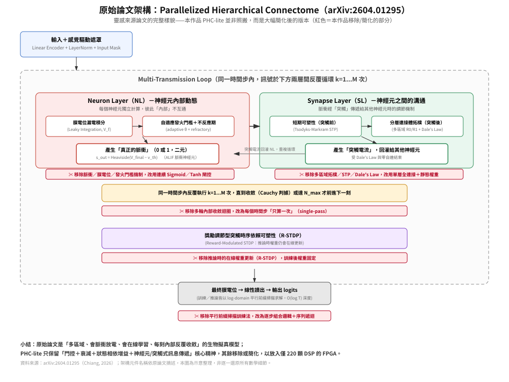

本作品已完成從 C 模擬、C/RTL 共模擬到 Vivado 實體佈局繞線（P&R）的全鏈路硬體驗證，並取得時序達標的實體電路實測結果（WNS=+0.020 ns）——本文呈現的是已被工具鏈與實體電路證實可行的設計，數據皆可追溯至實際工具輸出紀錄。
高頻交易（HFT）系統對推論延遲的「確定性」要求，往往高於對平均延遲本身的要求；CPU 推論路徑受作業系統排程、GC、快取失效影響，尾端延遲（tail latency）波動極大。本作品實證回答兩個問題：（1）具備跨時間步狀態依賴的遞迴神經網路，能否在資源極受限的 FPGA（AMD/Xilinx Zynq-7020，僅 220 顆 DSP、53,200 個 LUT）上完成 HLS 並通過實體 P&R；（2）其延遲特性優勢具體展現在何處。第一個問題答案是已實測確認的「是」；第二個問題的答案精確指向「尾端延遲與確定性」而非「平均速度」。
本作品以「PHC-lite」——核心概念受 Parallelized Hierarchical Connectome（PHC）空間遞迴框架啟發（Chiang, 2026，參考文獻3），經本團隊大幅簡化為單步、純定點數運算之遞迴狀態空間模型 PHCSSM（保留門控、衰減、狀態相依增益機制，移除原框架之脈衝神經元與多區域連接體拓樸）——作為實驗對象，以手動 Vitis HLS（而非自動化工具 hls4ml）實作其推論核心；三次以 hls4ml 自動轉換失敗的具體原因詳見第二項。歷經 8 輪資源除錯，最終版本通過 C 模擬（25,600 組測試向量、0 mismatch）、C/RTL 共模擬（bit-level 與 C 模型完全一致）、Vivado 實體 P&R（timing met，WNS=+0.020 ns），post-route 資源用量 LUT 14.20%／FF 7.72%／DSP48E1 21.36%／BRAM_18K 2.14%，全部在預算內。與 PyTorch CPU 基準比較，FPGA 固定延遲 83.16 µs，CPU 路徑 p99 延遲 778.8 µs，尾端延遲改善達 9.4 倍，且抖動為零。
本作品不宣稱已達成可部署的生產級 HFT 系統，亦不宣稱 FPGA 改善了交易 PnL（未進行任何交易回測）；目的是以可重現的工程數據，展示資源受限 FPGA 上遞迴神經網路 HLS 實作的可行性與系統化優化方法論，並提出明確的下一階段工作計畫。
FPGA 在金融交易硬體加速領域已有公開文獻佐證其低延遲優勢，例如 cuckoo hashing 訂單簿查詢可達平均 253 ns 延遲［參考文獻4］，多篇文獻指出 FPGA 加速可降低 70% 以上延遲［參考文獻5、6］。然而既有工作多聚焦「訂單簿維護」與「封包解析」此類確定性邏輯運算，較少涉及同時具備非線性運算與跨時間步狀態依賴的「遞迴神經網路推論」。本作品的動機即填補此落差：驗證具備門控、衰減、LayerNorm 機制的遞迴模型，能否在最入門等級 FPGA 上完成完整軟硬體驗證鏈。
hls4ml（Duarte et al., 2018［參考文獻1］）為學術界最成熟之「PyTorch/Keras 自動轉 HLS」工具鏈，亦有文獻證明可支援 GRU/LSTM（Aarrestad et al., 2022［參考文獻2］）。本團隊以 hls4ml 1.3.0 對三種模型變體進行轉換嘗試，三次嘗試全部在 Python 端模型解析階段即失敗，從未產生 C++ 專案或執行 Vivado 合成：
| 嘗試對象 | 失敗原因（依工具實際錯誤訊息） |
|---|---|
| TCN（3-block dilated） | ConstantPad1d layer 之 parser 失敗 |
| TCN（5-block prepad） | torch.fx 符號追蹤於控制流處丟出 TraceError |
| PHC-STP 單步模型（LayerNorm） | PyTorch frontend 明確拒絕 2D LayerNorm 輸入；改 3D 輸入仍失敗；改 ONNX 路徑於 shape 推斷階段失敗 |
三條轉換路徑皆已嘗試、全數失敗，指出自動化工具鏈在「含 LayerNorm 與跨時間步遞迴依賴」架構上的當前邊界，而非單純設定錯誤。據此，本作品選擇手動 Vitis HLS 重新實作模型數學定義，換取對每一個運算節點與資源用量決策的完全控制權。
本作品將 DSP 用量自最初設計的 2636%（超出平台容量，無法合成）收斂至最終 21%，LUT 由 2073% 收斂至 46%（csynth 估計值，實際 P&R 後為 14.20%），且每一步收斂皆對應一個經工具官方診斷訊息證實的根本原因，而非反覆試誤的偶然結果：
tanh() 在 HLS 中被合成為雙精度浮點核心，單次呼叫耗用約 2,048 顆 DSP；修復方式為 65 點分段線性定點查表取代。#pragma HLS PIPELINE II=X 觸發 Vitis HLS 自動將部分展開強制升格為完全展開（[HLS 214-275]／[HLS 214-376]）；修復方式為移除頂層 PIPELINE pragma。pipeline_loops 門檻仍自動對少迭代迴圈套用 pipeline 化並連鎖觸發強制展開（[HLS 214-291]／[HLS 214-449]）；修復方式為對受影響迴圈明確加上 #pragma HLS PIPELINE off。三項根本原因皆透過工具官方診斷訊息逐一確認，而非事後推測。
本作品交付的成果是：在無法管線化的遞迴架構限制下（II=Latency），於僅 220 顆 DSP 的入門級平台上，將 DSP 收斂至 21%、LUT 14.20%、FF 7.72%，並通過實體 P&R 時序驗證。多數 FPGA 創意應用作品（如 CNN 影像分類）在數學上前饋且無跨時間步依賴，可被管線化、權衡空間相對寬裕；本作品在不具備此優勢前提下，仍交付時序與資源雙達標之實體電路結果，且可由第四項完整 csim／cosim／P&R 報告逐一覆核。
PHC-lite（架構靈感來源見參考文獻3，本團隊簡化為單步定點版本）為單一時間步（single-timestep）推論核心，輸入為當前市場特徵向量與前一步隱藏狀態，輸出為訊號分數與更新後隱藏狀態。用一句話理解整個流程：先把輸入整理成好處理的格式，再決定多少新資訊可以進來、跟打折後的舊記憶混合，接著決定要多認真聽「其他人傳來的訊息」，最後把整體訊號穩定化後輸出決定。下方為對應的精確數學定義，供技術審查覆核：

STEP 1 encoded = SiLU( LayerNorm( ENC_LINEAR(x_t) ) ) STEP 2 gate_t = Sigmoid( GATE_LINEAR(encoded) ) STEP 3 candidate_t = Tanh( CANDIDATE_LINEAR(encoded) ) STEP 4 state_temporal = DECAY ⊙ state_prev + gate_t ⊙ candidate_t STEP 5 gain_t = Sigmoid( GAIN_LINEAR(encoded) + GAIN_PREV_W × state_prev ) STEP 6 message = SiLU( SYNAPSE_LINEAR(state_temporal) ) STEP 7 loop_input = state_temporal + ALPHA ⊙ gain_t ⊙ message STEP 8 z = LayerNorm(loop_input) STEP 9 readout = READOUT_LINEAR(z) ；state_next = state_temporal
共 7 個線性層、2 個 LayerNorm、3 種非線性活化（Sigmoid／Tanh／SiLU）。所有非線性運算皆以 65 點預先計算之定點查表（線性插值）實現，避免任何浮點硬體核心進入合成結果——此為 v1 到 v8 除錯歷程中最關鍵的單一決策（見 2.3 根本原因1）。STEP4 的 state_temporal 與 STEP9 的 state_next 構成跨時間步遞迴回授路徑：第 t+1 步必須等待第 t 步算出 state_next，此即「II=Latency、無法管線化」之根本約束（詳見 3.3）。

| 面向 | 原始 PHC 論文 | 本作品 PHC-lite |
|---|---|---|
| 神經元輸出 | 脈衝（spike，0/1 二元，ALIF 動態） | 連續值（Sigmoid／Tanh 閘控） |
| 網路拓樸 | 多區域分層連接體（W_struct=W_syn⊙M_topo） | 單層全連接（dense） |
| 突觸機制 | Tsodyks-Markram 短期可塑性＋Dale's Law | 靜態訓練權重，無 STP／Dale's Law 約束 |
| 時間步內計算 | Multi-Transmission Loop，k=1...M 反覆收斂 | 單次（single-pass） |
| 權重更新時機 | 推論時仍在線更新（R-STDP） | 訓練後權重固定，推論不再更新 |
| 訓練／推論求解法 | log-domain 平行前綴掃描，O(log T) 深度 | 逐步驟組合邏輯＋跨時間步序列遞迴，II=Latency |
| 設計目標 | 生物擬真度與多區域動態 | 資源受限 FPGA 之 HLS 可行性 |
本作品僅取用原論文之門控、狀態相依增益、神經元/突觸式分工此一核心精神，移除脈衝動態、多區域拓樸、STP、R-STDP 與多輪收斂迴圈——這些機制在生物擬真度上有其價值，但會使資源用量遠超本平台（僅 220 顆 DSP）之預算，亦無法在現有時程內完成手動 HLS 驗證；此取捨即是本作品「設計概念」的核心，而非單純的功能閹割（量化證據見 2.3、4.4）。
| 型別 | 定義（總位寬, 整數位寬） | 用途 |
|---|---|---|
| 輸入／權重 | ap_fixed<24,12> | 模型輸入、各線性層權重 |
| 累加器 | ap_fixed<40,16> | 矩陣乘加中間累加，預留位寬避免溢位 |
| LayerNorm 變異數 | ap_fixed<48,24> | 變異數計算對動態範圍要求最高 |
PHC-lite 數學定義上是遞迴的：第 t+1 步需第 t 步算出之 state_next 作為輸入，跨時間步無法管線化，有效啟動間隔（II）等於整體延遲（Latency）。此為模型架構本身的根本約束，而非本次 HLS 實作的疏漏；所有延遲數字皆基於「單步、序列執行」此前提下量測。
本核心設計定位是嵌入造市商（market making）策略之「訊號生成」環節：對每筆委託簿事件，產出固定延遲的訊號分數，供下游風控邏輯在已知最差時序預算下決策。價值主張並非「比現有最快交易系統更快」，而是「在已知、固定的時間窗內，保證完成一次推論」。目前驗證範圍止於 IP 層級的 csim／cosim／P&R，尚未進行 PS–PL 整合及上板測試，列為下一階段工作（第五項）。
| 項目 | 數值 |
|---|---|
| 目標時脈週期 | 10.000 ns |
| 實作後達成週期 | 9.980 ns |
| WNS | +0.020 ns |
| TNS | 0.000 ns（22,941 個端點，0 個失敗） |
| 時序判定 | Met |
目前狀態：本設計已在 100 MHz 目標頻率下完成 Vivado P&R 時序驗證，WNS=+0.020 ns，判定達標。考量餘裕仍偏緊，下一階段工作已規劃降頻至 90 MHz 重新執行 P&R，建立更穩健的時序餘裕。
| 資源 | csynth 估算 | P&R 實際用量 | 可用總量 | 實際使用率 |
|---|---|---|---|---|
| Slice LUT | 24,836 | 7,555 | 53,200 | 14.20% |
| FF | 14,518 | 8,217 | 106,400 | 7.72% |
| DSP48E1 | 46 | 47 | 220 | 21.36% |
| BRAM_18K | 6 | 6 | 280 | 2.14% |
post-route 實際用量遠低於 csynth 估算（LUT 降幅約 70%），因 Vivado 邏輯合成階段進行額外合併優化；csynth 報表僅為上界估算，本作品以 P&R 實測數據作為可行性判斷依據。
| 版本 | 關鍵動作 | DSP | LUT | FF | csim |
|---|---|---|---|---|---|
| v1 | 初始版本（浮點 tanh） | 2636% | 2073% | 441% | 未通過 |
| v2 | 改用定點查表 tanh | 1603% | 839% | 441% | PASS |
| v3–v5 | 調整 UNROLL／PARTITION／PIPELINE II | ~395–1603% | — | — | — |
| v6 | 移除頂層 PIPELINE pragma | 247% | 113% | 86% | PASS |
| v7 | 移除輔助 ARRAY_PARTITION | 121% | 77% | 52% | — |
| v8（最終） | 對受影響迴圈加 PIPELINE off | 21% | 46% | 13% | PASS |
每一步收斂皆對應工具診斷訊息證實之根本原因（見 2.3），而非反覆嘗試的偶然結果。
PyTorch float32 CPU 推論（batch_size=1，暖機 100 次、量測 10,000 次）與 FPGA 固定延遲（序列執行、不可管線化）比較：
| 指標 | FPGA（固定值） | CPU（PyTorch） |
|---|---|---|
| 延遲（平均） | 83.16 µs | 117.5 µs |
| 延遲（中位數） | 83.16 µs | 84.2 µs |
| 延遲（p99） | 83.16 µs | 778.8 µs |
| 抖動 | 0（確定性） | 高 |
正確解讀：優勢非展現於平均延遲（與 CPU 平均、中位數相近），而是 p99 尾端延遲改善 9.4 倍、抖動為零——HFT 場景中真正決定風險暴露時間窗的是最差情況延遲而非平均延遲。
已知限制：83.16 µs 不滿足典型 HFT L1（<10 µs）門檻；CPU 基準為 Python/PyTorch 路徑，非 C++/LibTorch 最佳化基準，p99 數字含 Python 解譯器額外開銷，比較時應留意此公平性限制。
| 階段 | 工作項目 | 時程 | 預期產出 |
|---|---|---|---|
| Phase 1（已完成） | HLS 8 輪資源優化、csim／cosim／P&R 驗證、CPU 基準對照 | 已完成 | v8 設計與完整驗證報告 |
| Phase 2 | INT16 量化（ap_fixed<16,8>） | 4 週內 | 量化版 csynth／csim 報告，工程預估延遲約 25 µs（待確認） |
| Phase 3 | PS–PL 整合與 PYNQ-Z2 上板測試 | Phase 2 後 2 週 | 實機量測延遲，與 P&R 估算對照 |
| Phase 4 | 隱藏層維度縮減評估（16→8維） | Phase 3 後 1 週 | 精度與延遲權衡報告 |
| Phase 5 | 決賽報告與簡報整理 | 決賽前 | 最終報告、簡報、問答清單 |
每階段延續本作品方法論：先建立假設與量化指標，再執行修改，以工具實際輸出作為結案依據；上板實測結果無論是否與 P&R 預測一致，皆會誠實呈現。軟硬體實現方式：硬體側為 HLS 合成之 PHC-lite IP（IP 層級，out-of-context 合成，尚未整合 Zynq Block Design）；軟體側為 PyTorch 訓練與量化前處理流程、測試向量產生與比對腳本。
本作品交付的核心成果，是已通過實體電路驗證（非合成估算）的遞迴神經網路推論核心：post-route 資源用量 LUT 14.20%／FF 7.72%／DSP48E1 21.36%／BRAM_18K 2.14%，Vivado P&R 時序達標（WNS=+0.020 ns），與 CPU 基準比較取得 p99 尾端延遲 9.4 倍改善、零抖動之實測數據。其特色在於：第一，PHCSSM 受 Parallelized Hierarchical Connectome 框架啟發（參考文獻3）、經團隊簡化並完成實作驗證，交付了「尾端延遲與確定性」而非「平均速度」的 FPGA-in-HFT 價值論證；第二，在 hls4ml 三次轉換失敗的前提下，仍以手動 HLS 交付完整可驗證之硬體成果，三項根本原因修復記錄是支撐此成果可信度的工程證據。
本作品同時誠實揭露現階段限制：時序餘裕偏緊、尚未完成上板實測、83.16 µs 延遲尚未達 HFT L1 部署門檻。本作品價值主張並非宣稱已解決 HFT 低延遲問題，而是以實測 p99 改善與零抖動特性，重新定義「FPGA 加速」在 HFT 場景中應理解為「確定性」之改善而非平均延遲之競賽，並提出明確、可驗證的下一階段工作計畫。